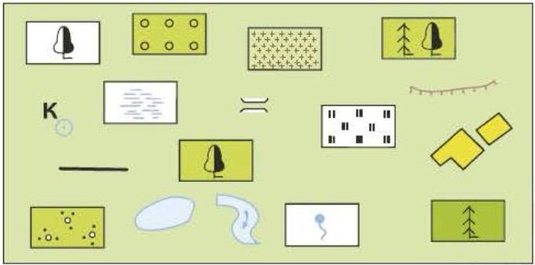

Только пройденное: §6–10, стр. 36–63 (класс остановился на плане местности). Блоки с меткой 📌 учитель — из списка учителя, их учить обязательно. Блоки ➕ дополнительно — для связи и понимания, учитель их не называл.
| Микромир — примеры | Макромир — примеры |
|---|---|
| атом, молекула воды, элементарная частица, вирус, бактерия (бифидобактерия) 📖 | человек, дерево, автомобиль 📖, портфель, дом, кошка ✏️ |
| Слой | Состав слоя | Толщина слоя | Особенности |
|---|---|---|---|
| Земная кора | океаническая | 5–10 км | с глубиной температура растёт на 3 °C каждые 100 м |
| материковая | 30–40 км, в горах до 80 км | ||
| Мантия | верхняя | от 5–80 км до 2900 км в глубину | 83% объёма, 67% массы Земли |
| нижняя | |||
| Ядро | внешнее | 2200 км | на глубине 3000–6000 км |
| внутреннее | 1300 км |
| Оболочка | Какая | Что в неё входит |
|---|---|---|
| Литосфера «литос» — камень | твёрдая | скалистая, из полезных ископаемых; от вершины Джомолунгмы до дна Марианского жёлоба |
| Гидросфера «гидрос» — вода | водная | океаны, моря, реки, озёра, влажность воздуха; 97% воды — в океанах, 3% пресная, ¾ её — лёд |
| Биосфера «биос» — жизнь | живая | растения, животные, одноклеточные; жизнь в основном от 3 м ниже до 30 м выше поверхности, в океане — до 200 м |
| Атмосфера «атмос» — воздух | газообразная | воздух: 79% азота, менее 21% кислорода; плотнее всего у поверхности |

1 2 3 4 5 6 7 8 9 10 11 12 13 14 15 16 17